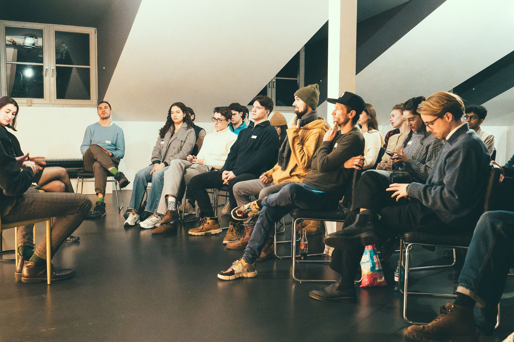

500 members. Since 2013. You get a seat in a real team, a network that outlasts your degree, and a year to prove what you can build.
What you actually get
START Berlin is the student-run initiative at the intersection of entrepreneurship, technology and innovation in Berlin. Every member sits in a department and runs real work — here's what that's worth, in the three terms people actually join for.
Where we are today
Figures maintained by Operations & Digital. Planned: live sync from the Cockpit — this section reads from a single data object built for that swap.
Words of former starties
Why they joined, what they moved at START, and what came of it — across all three dimensions. Weighted toward alumni, because the point is what happens after.
Application to alumni
What is expected of you and what you get, at every point. Open a phase to see the detail — including the bits people are usually nervous to ask about.
This cycle
Two info sessions with the Chapter Lead before you decide. If you apply, you get the full START Sprint dates by email straight away so you can block them.
Startie here, Startie everywhere
START chapters are independent student organisations across Europe and South America, tied together by START Global in St. Gallen — the people behind START Summit and the START Hackathon. Join in Berlin, and you're in the network everywhere.
Stylised — not to scale. Per-chapter member counts and cross-chapter links are planned as a shared module with the other chapters.